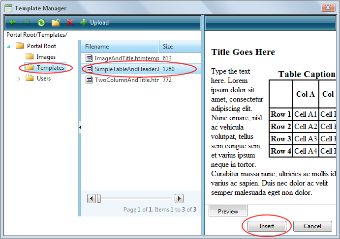

Inserting a Template
How to insert a template using the TelerikEditorProvider for the RTE.
- Place you cursor where you want to insert the template.
- Click the Template Manager
 button. This opens the Template Manager.
button. This opens the Template Manager.
- Navigate to and select the required template. Note: Templates are typically stored in the Portal Root > Templates folder. See "Using the Resource Manager"
- Click the Insert button. This inserts the template into the editor read for you to edit.

Inserting a Template